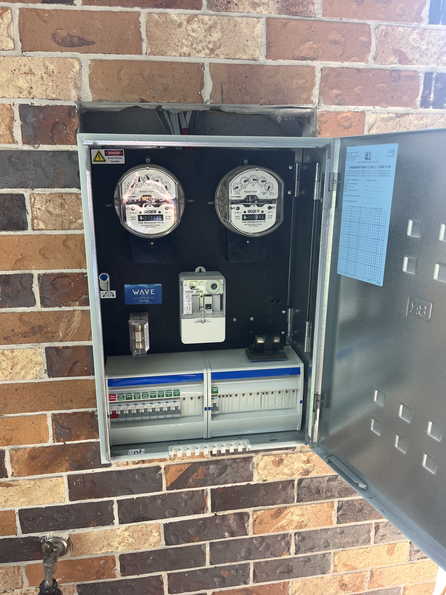

Tripping safety switches, dead circuits, flickering lights — we find the cause and fix it properly. No guesswork, no repeat visits.
Electrical faults are one of those things that get worse if you ignore them and harder to fix if someone guesses at them first. A safety switch that keeps tripping isn't just an annoyance — it's a symptom. The right approach is to find the underlying fault and fix it correctly, not reset the switch and hope it stops.
We've diagnosed and fixed hundreds of electrical faults across Noosa homes and businesses — from faulty appliances causing nuisance trips, to ageing wiring creating intermittent faults, to water ingress causing circuit problems in older homes. We use proper test equipment, we work methodically, and we tell you what we found and why.
Most faults are diagnosed and repaired in a single visit. For urgent electrical faults, call Steve directly on 0423 181 744 — we're based in Sunrise Beach and can usually get to Noosa jobs quickly.

A safety switch that keeps tripping — repeatedly or under load — points to a fault somewhere in the circuit. We find it and fix it rather than just resetting it.
Power points or whole circuits with no power. Often a tripped breaker, faulty connection or damaged cable — we track it down to the source.
Persistent flickering is usually a loose connection or failing component. Left alone it can cause overheating or arcing — worth getting sorted.
Warm power points, discolouration or a burning smell are serious warning signs. Stop using the outlet and call us — it needs replacing, not ignoring.
After flooding, leaks or condensation near wiring, we assess the damage and make the area electrically safe before anything is reconnected.
Faults that come and go are often the hardest to find. We have the test equipment and experience to track down intermittent wiring problems in older Noosa homes.
A methodical approach saves time and gets the right answer. Here's what a typical fault finding visit looks like:
In most cases, the fault is found and fixed in a single visit. If the problem turns out to be more complex — damaged underground cable, widespread wiring degradation — we'll give you a clear quote before proceeding.
Fault finding often uncovers other issues. We can handle these in the same visit:
Call Steve directly — we're local to Sunrise Beach and usually available quickly.